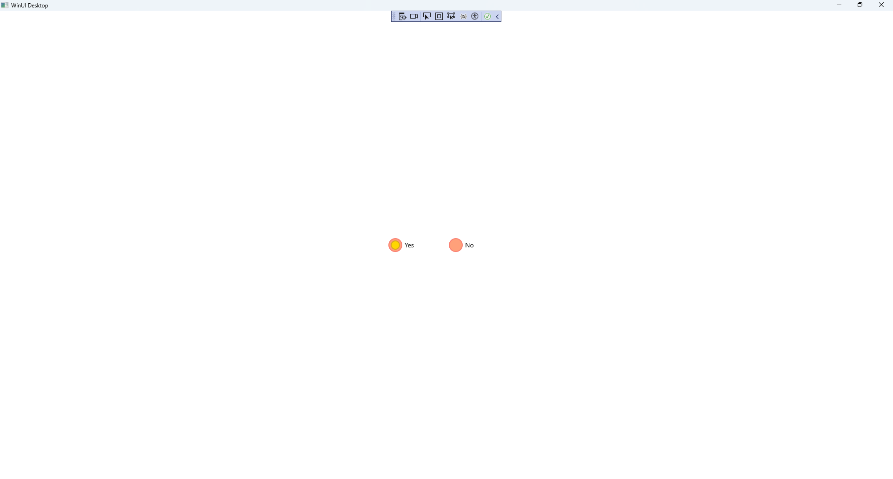

Custom RadioButton
Learn creating a Custom RadioButton using Windows App SDK with this Tutorial
Custom RadioButton shows how to create a Style for a RadioButton using Windows App SDK.
Step 1
Follow Setup and Start on how to get Setup and Install what you need for Visual Studio 2022 and Windows App SDK.


Step 2
Step 3
In the XAML for App.xaml below the Comment
of <!-- Other app resources here --> type in the following XAML:
<Style x:Key="CustomRadioButton" TargetType="RadioButton">
<Setter Property="Background" Value="Transparent"/>
<Setter Property="Foreground"
Value="{ThemeResource SystemControlForegroundBaseHighBrush}"/>
<Setter Property="Padding" Value="5,5,0,0"/>
<Setter Property="Margin" Value="5,5,5,5"/>
<Setter Property="HorizontalAlignment" Value="Left"/>
<Setter Property="VerticalAlignment" Value="Center"/>
<Setter Property="HorizontalContentAlignment" Value="Left"/>
<Setter Property="VerticalContentAlignment" Value="Top"/>
<Setter Property="FontFamily"
Value="{ThemeResource ContentControlThemeFontFamily}"/>
<Setter Property="FontSize"
Value="{ThemeResource ControlContentThemeFontSize}"/>
<Setter Property="UseSystemFocusVisuals" Value="True"/>
<Setter Property="Template">
<Setter.Value>
<ControlTemplate TargetType="RadioButton">
<Grid BorderBrush="{TemplateBinding BorderBrush}"
BorderThickness="{TemplateBinding BorderThickness}"
Background="{TemplateBinding Background}">
<Grid.ColumnDefinitions>
<ColumnDefinition Width="30"/>
<ColumnDefinition Width="*"/>
</Grid.ColumnDefinitions>
<!-- Visual State Groups -->
<!-- Content -->
</Grid>
</ControlTemplate>
</Setter.Value>
</Setter>
</Style>
This XAML is part of a Style of CustomRadioButton that will be used to target a RadioButton
which will contain some Visual State Groups and Content for the Custom Button.
Step 4
While still the XAML for App.xaml below the Comment
of <!-- Visual State Groups --> type in the following XAML:
<VisualStateManager.VisualStateGroups>
<VisualStateGroup x:Name="CombinedStates">
<VisualState x:Name="Checked">
<Storyboard>
<ObjectAnimationUsingKeyFrames
Storyboard.TargetProperty="Opacity"
Storyboard.TargetName="InnerEllipse">
<DiscreteObjectKeyFrame KeyTime="0" Value="1"/>
</ObjectAnimationUsingKeyFrames>
</Storyboard>
</VisualState>
<VisualState x:Name="Unchecked">
<Storyboard>
<ObjectAnimationUsingKeyFrames
Storyboard.TargetProperty="Opacity"
Storyboard.TargetName="InnerEllipse">
<DiscreteObjectKeyFrame KeyTime="0" Value="0"/>
</ObjectAnimationUsingKeyFrames>
</Storyboard>
</VisualState>
</VisualStateGroup>
</VisualStateManager.VisualStateGroups>
This XAML is for the Visual State Groups that will represent the States for the RadioButton including
how it will behave when Checked and when it is Unchecked for the Custom RadioButton.
Step 5
Then in the XAML for App.xaml below the Comment
of <!-- Content --> type in the following XAML:
<Grid>
<Ellipse x:Name="NormalEllipse" Height="30" Width="30"
UseLayoutRounding="False" StrokeThickness="2"
Stroke="Salmon" Fill="LightSalmon"/>
<Ellipse x:Name="InnerEllipse" Height="20" Width="20"
UseLayoutRounding="False" StrokeThickness="2"
Stroke="Goldenrod" Fill="Gold" Opacity="0" />
</Grid>
<ContentPresenter x:Name="ContentPresenter" Grid.Column="1"
AutomationProperties.AccessibilityView="Raw"
ContentTemplate="{TemplateBinding ContentTemplate}"
ContentTransitions="{TemplateBinding ContentTransitions}"
Content="{TemplateBinding Content}"
HorizontalAlignment="{TemplateBinding HorizontalContentAlignment}"
Margin="{TemplateBinding Padding}" TextWrapping="Wrap"
VerticalAlignment="{TemplateBinding VerticalContentAlignment}"/>
This XAML is the Content for the layout of a RadioButton when the Style is applied for the Custom RadioButton.
Step 6
Step 7
In the XAML for MainWindow.xaml there will be some XAML for a StackPanel which should remain, and a Button> which should be Removed
by removing the following:
<Button x:Name="myButton" Click="myButton_Click">Click Me</Button>
Step 8
While still in the XAML for MainWindow.xaml above </StackPanel>, type in the following XAML:
<RadioButton Content="Yes" IsChecked="True"
Style="{StaticResource CustomRadioButton}" />
<RadioButton Content="No"
Style="{StaticResource CustomRadioButton}"/>
This XAML contains two sets of RadioButton with Style set to the
StaticResource of CustomRadioButton from App.xaml.
Step 9
Step 10
In the Code for MainWindow.xaml.cs there be a Method of myButton_Click(...) this should be Removed by removing the following:
private void myButton_Click(object sender, RoutedEventArgs e)
{
myButton.Content = "Clicked";
}
Step 11
Step 12
Once running you will see the Custom RadioButton displayed.

Step 13